Creating A Simple Web Application
With Heroku and Neo4j
Before Beginning
Creating a website or web application and connecting it to a database is not a trivial task so in order to complete this tutorial state we expect that you have completed the previous stages giving you and introduction to Neo4j calls and commands. To complete the application you will also need a basic understating of HTML, CSS, Node.js and the Heroku hosting platform. In order to complete this stage you will also have needed to complete the Heroku getting started tutorial. That tutorial can be found here.
Setting up GrapheneDB
To create our application we will be using Heroku as our web based cloud platform provider. Heroku is easy to use, has a generous free tier, and easily integrates with many powerful data services that allow deployed applications to run with modern software suite products like Neo4j. Everything we will be doing in this tutorial stage can be done with Heroku’s free tiers. Our tutorial will begin where the Heroku getting started tutorial left off.
1.
Adding GrapheneDB to your application is easy with Heroku. First make sure you are in the Heroku app counsole and are in the tutorial application you have just created. We will first need to click on Configure Add-ons and then Find more add-ons in order to add GrapheneDB.
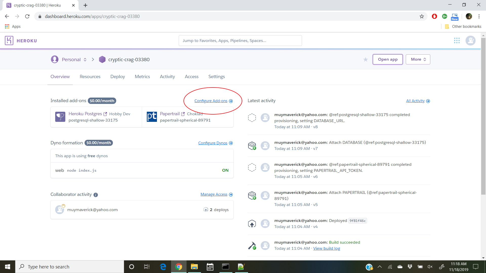 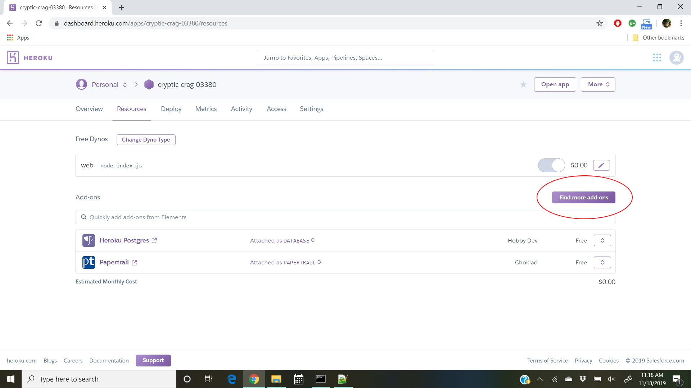
2.
Once on the Add-ons screen search for GrapheneDB or Neo4j in the search Elements box. Click on the GrapheneDB add-on in order to be brought to its add-on screen. Next click on the Install GrapheneDB button and then Provision add-on. This will then install GrapheneDB for your application.
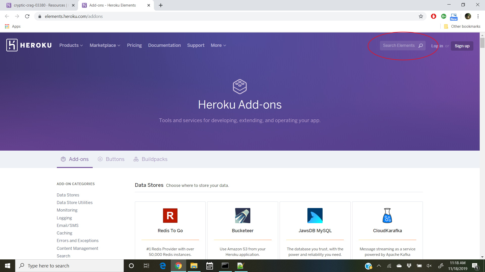 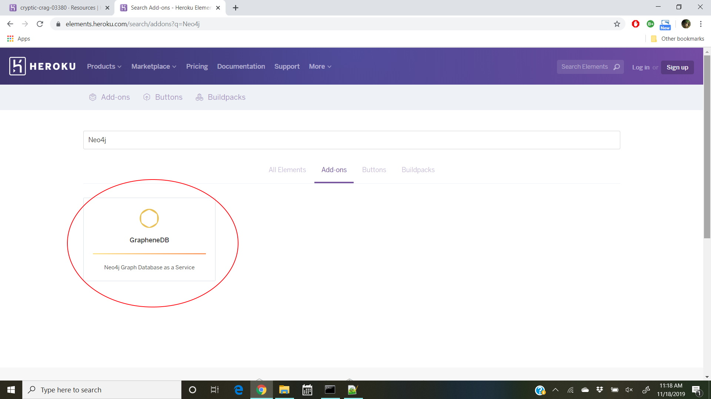 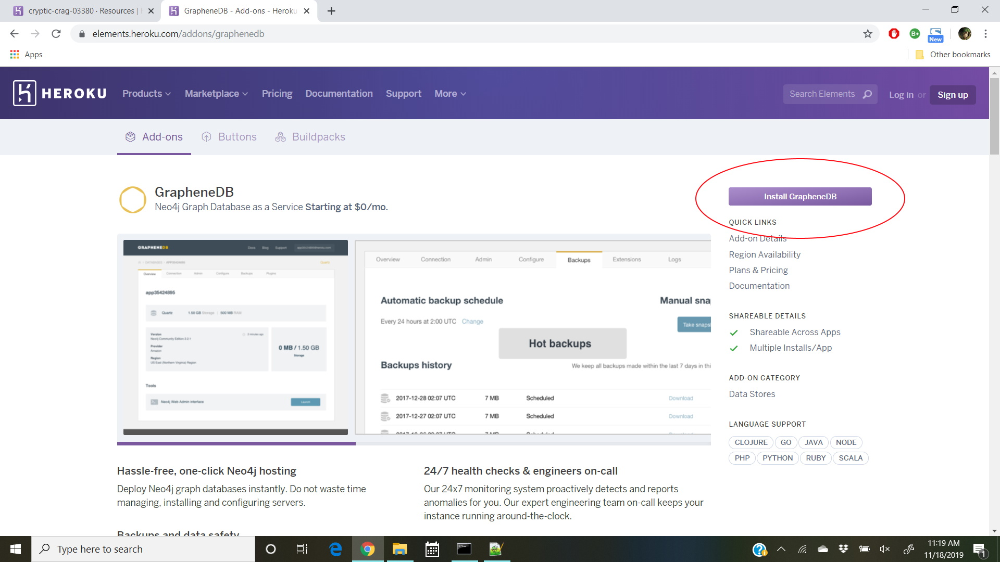 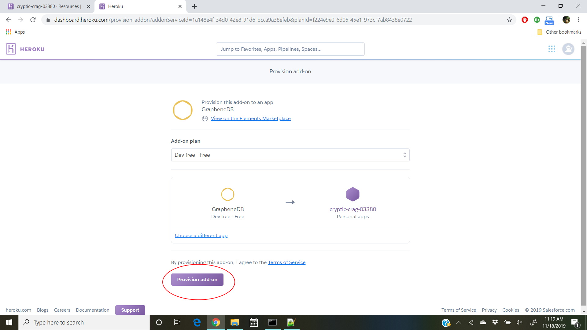
Using Neo4j with GrapheneDB
1.
You should now see that GrapheneDB is one of your Installed add-ons when you navigate back to your Heroku Application overview screen. To begin using Neo4j with GrapheneDB we need to click on the GrapheneDB add-on.
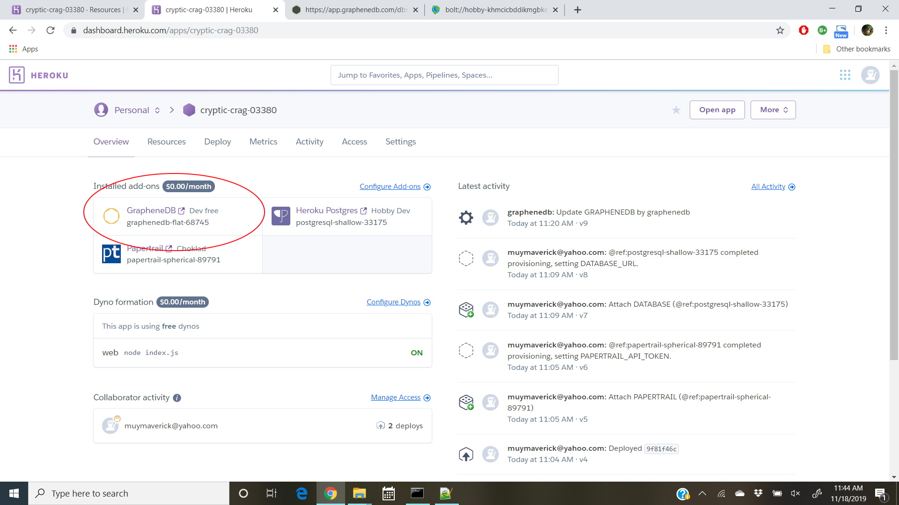
2.
You should now be brought to your applications GrapheneDB main portal page. This page contains lots of information like how much is being stored, what version we are using, and what server we are using. For the free version you should also see that we are limited in the number of nodes and relationships we can have. We will not need anywhere near this amount of nodes for our tutorial. To launch the Neo4j Browser click on the Launch button.
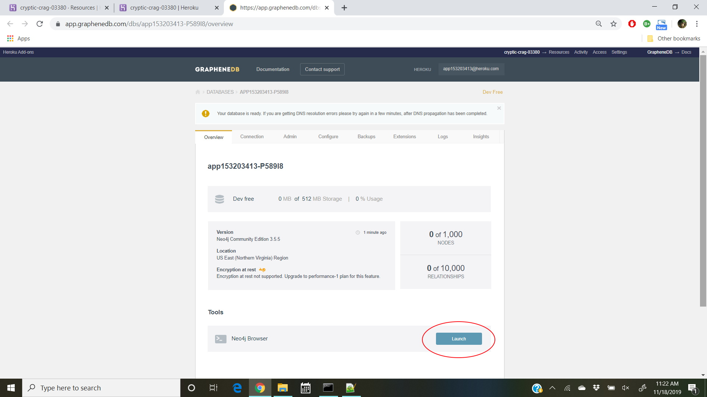
3.
This screen should look familiar because it is the standard Neo4j application screen. You can now add and edit your database data like you’ve done for the previous stages in this tutorial. In order to just show how to use this screen we will be keeping it simple. In the editor command box input the following statement:
CREATE (ee:Person { name: "Emil", from: "Sweden", klout: 99 })
CREATE (js:Person { name: "Johan", from: "Sweden", learn: "surfing" }),
(ir:Person { name: "Ian", from: "England", title: "author" }),
(rvb:Person { name: "Rik", from: "Belgium", pet: "Orval" }),
(ally:Person { name: "Allison", from: "California", hobby: "surfing" }),
(ee)-[:KNOWS {since: 2001}]->(js),(ee)-[:KNOWS {rating: 5}]->(ir),
(js)-[:KNOWS]->(ir),(js)-[:KNOWS]->(rvb),
(ir)-[:KNOWS]->(js),(ir)-[:KNOWS]->(ally),
(rvb)-[:KNOWS]→(ally)
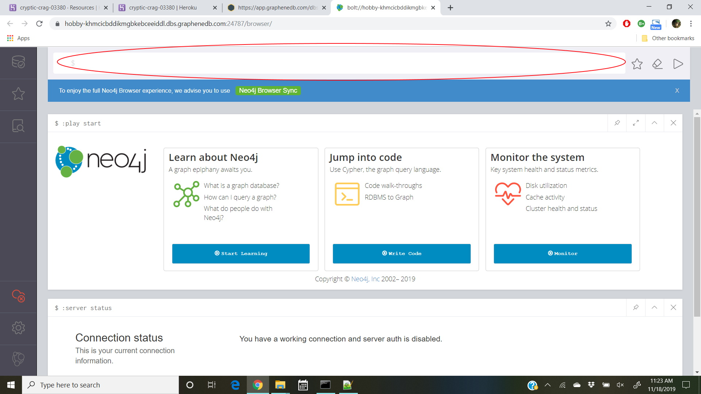
4.
Now if we open up the database Information tab and click on our nodes we will see all of the nodes we just created in our Heroku Neo4j database. We have now successfully used Neo4j with the GrapheneDB add-on.
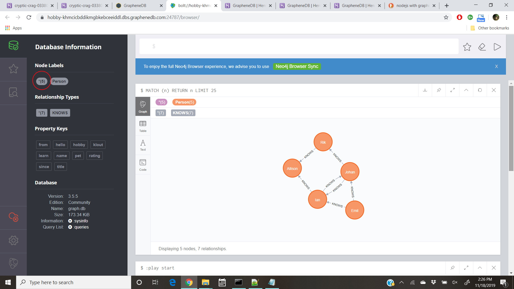
Accessing Neo4j DB Through Your Web App
1.
Next we will access our database through our web application and not the built in Neo4j browser. To do this we will first need to install the neo4j-driver via npm. To do this run this command:
$ npm install neo4j-driver.
Simply run this command via the command line while in your project file.
2.
Next we will need to update our index file with the appropriate code. We will first need to connect to the Neo4j instance using Heroku’s environment variables. Paste this code into your index file.js file.
var neo4j = require('neo4j-driver').v1;
var graphenedbURL = process.env.GRAPHENEDB_BOLT_URL;
var graphenedbUser = process.env.GRAPHENEDB_BOLT_USER;
var graphenedbPass = process.env.GRAPHENEDB_BOLT_PASSWORD;
var driver = neo4j.driver(graphenedbURL, neo4j.auth.basic(graphenedbUser, graphenedbPass));
3.
Finally it’s time to test our connection by creating a single test node. To do this paste in this code underneath step 2’s code.
var session = driver.session();
session
.run("CREATE (n {hello: 'World'}) RETURN n.name")
.then(function(result) {
result.records.forEach(function(record) {
console.log(record)
});
session.close();
})
.catch(function(error) {
console.log(error);
});
4.
Now that all the code is in your index file use git to add, commit, and push to the Heroku Server. Once that is done open up your app and then go back to the Neo4j built in browser to see if your code actually was able to input a new node. As you can see from the picture below the Neo4j database now has the new test node we have created. It has been given an id of 61 and has the property hello:World. Now that we have successfully accessed our Neo4j DB through our application files we can build anything. We can input code to create more nodes, find matches, and so on.
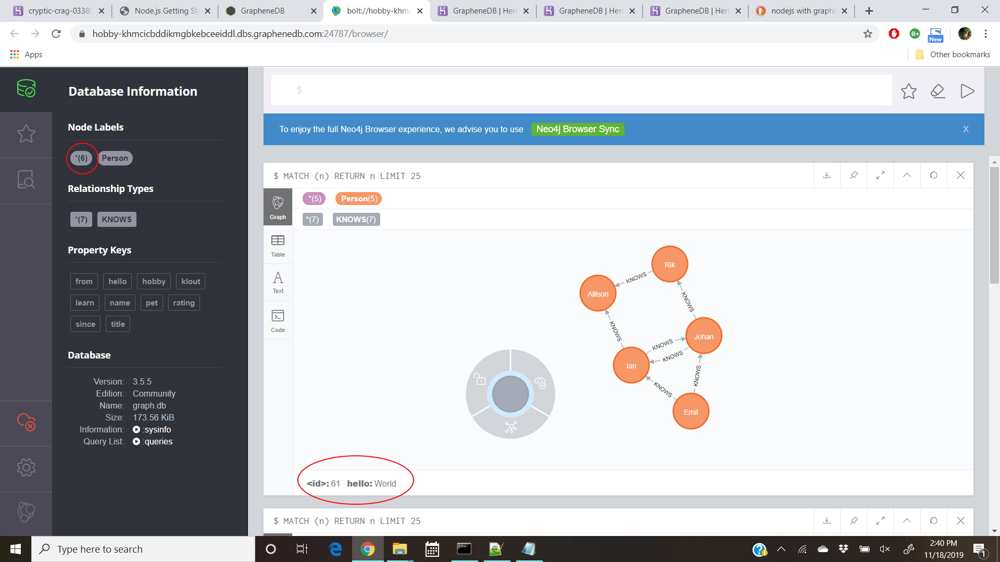
Previous
Next